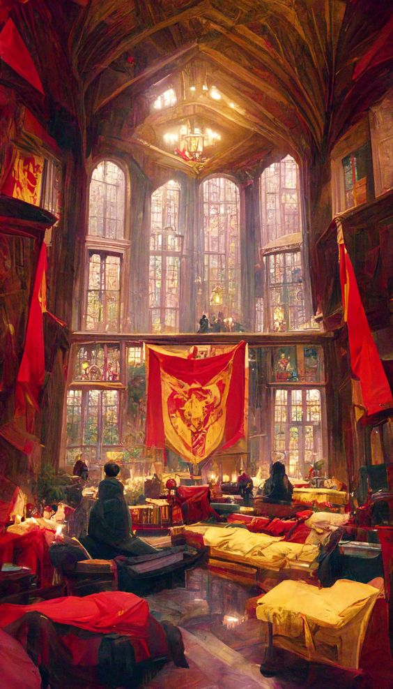
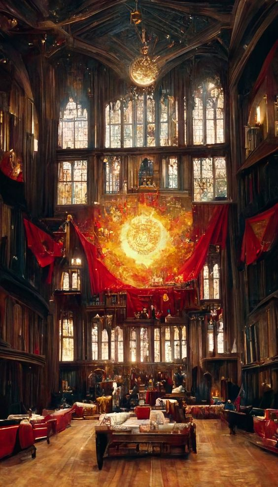
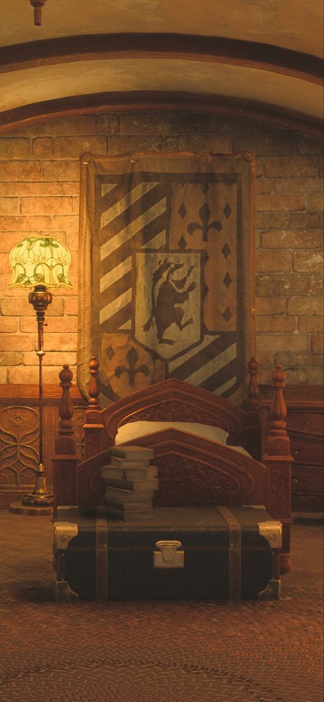
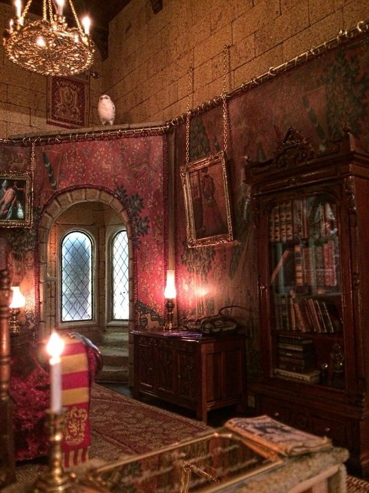
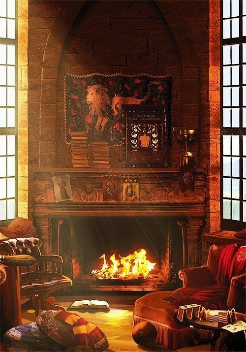
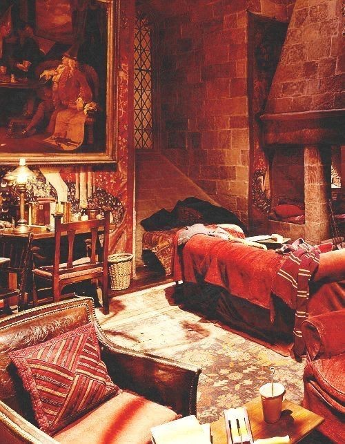
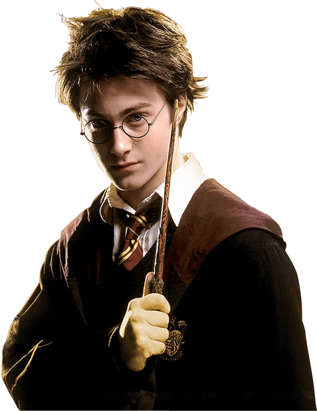

Hogwarts
SCHOOL
DORMITORY
CLUB
NOTICE
Dormitory
Gryffindor
Hufflepuff
Ravenclaw
Slytherin
Gryffindor Dormitory photo






◀
▶
Gryffindor Leader

Name : Harry Potter
Age : 1980/07/31
Name : Hermione
Age : 1979/09/19
Name : Ron Weasley
Age : 1980/03/01
Gryffindor Guestbook
update